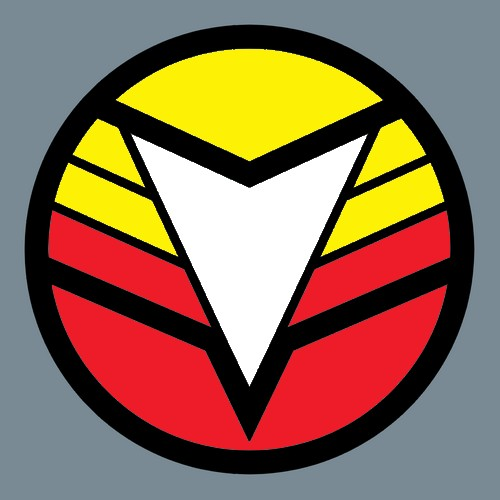
Le Faucon (Sam Wilson) (Terre-616)
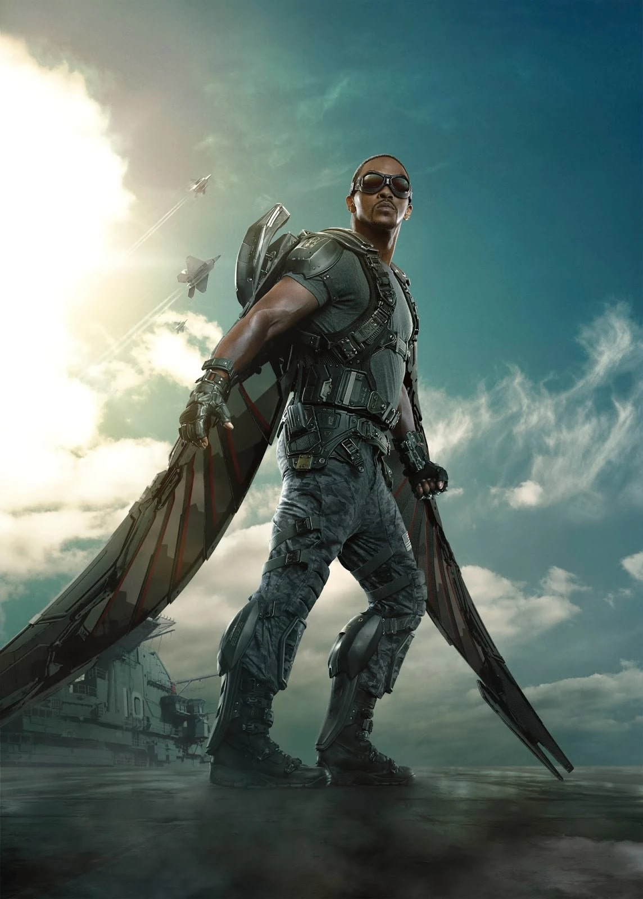
Origines :
Samuel Wilson était à l'origine un jeune bandit du ghetto de New-York, qui a grandi dans un quartier difficile de Harlem.
Son père, pasteur, fut tué quand alors qu'il n'était âgé que de neuf ans, en tentant d'arrêter une bagarre entre deux gangs rivaux.
Quelques années plus tard, ce fut sa mère, Darlène, qui se fit assassiner par un voyou en tentant de protéger ses enfants.
Devenu bandit dans le ghetto de New-York, puis membre de la mafia, il fera de son mieux pour sortir de sa condition et retourner dans le droit chemin, en faisant du bénévolat en en devenant travailleur social.
Un jour, il fût attiré sur une île des Caraïbes nommée Exil par Crâne Rouge et ses acolytes, qui s'y cachaient.
Ce dernier, grâce aux pouvoirs du Cube cosmique, lui conféra la possibilité de communiquer avec son faucon, Ailes Rouges (Redwing en VO) et fut désigné pour servir de « héros-piège » pour Captain America.
Steve Rogers et Sam Wilson se rencontrèrent donc alors que Captain America traquait Crâne Rouge, et une première escarmouche se déclencha entre les deux.
Sam, ayant reçu l'ordre de la part de Crâne Rouge de tuer Captain America, se rebella et les deux héros vainquirent le Crâne.
C'est à ce moment là que Steve décida de prendre le Faucon sous son aile et l'entraîna
Après plusieurs années, le Faucon quittera finalement son rôle de partenaire lorsqu'il fut nommé chef des Super-Agents du SHIELD.
Plus tard, étant l'un des rares super-héros noirs encore en activité, il fut contacté par Henry Peter Gyrich, (un agent de liaison entre les Avengers et l' ANS (Agence Nationale de Sécurité)) pour rejoindre les Avengers, pour remplir un quota.
Mécontent de n'être qu'un simple symbole, il démissionna à le première occasion.
De nouveau sous les traits du Faucon, Wilson reçut l'aide du Black Panther qui l'équipera d'une paire d'ailes spéciales lui permettant de voler dans les airs.
Le Faucon verra, au fil des années, ses pouvoirs se développer, si bien qu'il peut désormais communiquer avec la plupart des oiseaux.
Lorsque Rogers abandonna brièvement son identité de Captain America, d'autres tentèrent de lui succéder, notamment un jeune homme nommé Roscoe, un des mentors de Wilson, mais Crâne Rouge l'assassina et Rogers redevint Captain America.
Durant la Civil War, il est du côté des opposants à la loi de recensement des super-humains, et en a même été le leader pendant une courte période, remplaçant Steve qui devait soigner ses blessures.
Après la mort de Captain America, le Faucon s'enregistre et devient responsable du territoire de Harlem, mais continue d'être en contact avec les Secret Avengers, qui refusent toujours le recensement.
Lorsque Steve Rogers se voit priver des effets de son sérum de Super-Soldat, il confie son rôle de Captain America à son ami Sam Wilson.
Il conservera ce rôle pendant quelques années, en adoptant une position plus active contre les injustices sociales, il défend les immigrés, les minorités et luttera d'une main de fer contre les violences policières et la corruption gouvernementale.
Mais ses actions vont profondément diviser l'opinion publique.Une partie de la population, des médias et même du gouvernement rejette ce qu'ils perçoivent comme une version « trop politique » de Captain America.
Il reçoit des menaces, et se voit dénigré par des politiciens.
Ses actions sont constamment surveillées et détournées, à un point tel que certains super-héros et anciens alliés doutent de lui.
Il finira par abandonner ce rôle, le poids symbolique du bouclier devenant trop lourd pour lui, et reprendra son identité de Faucon.
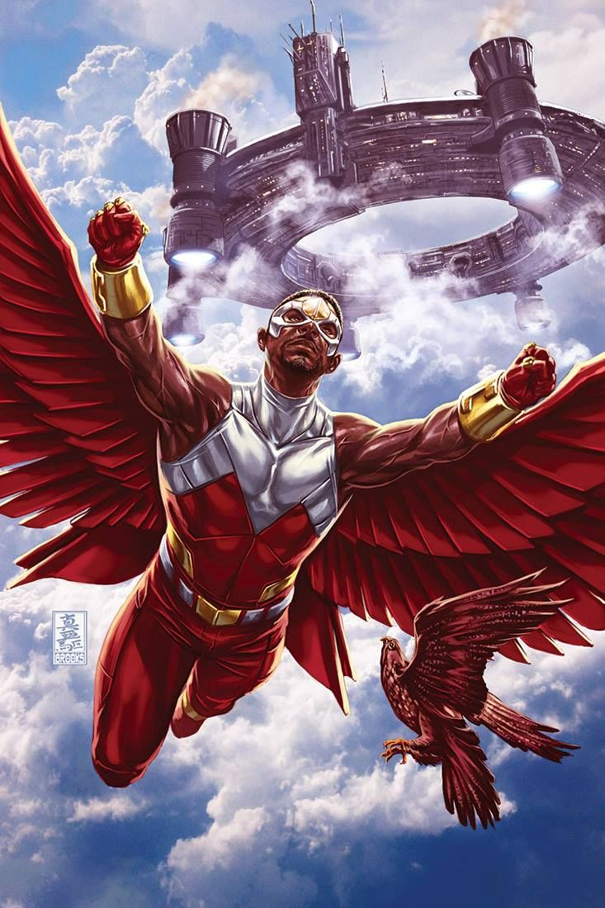
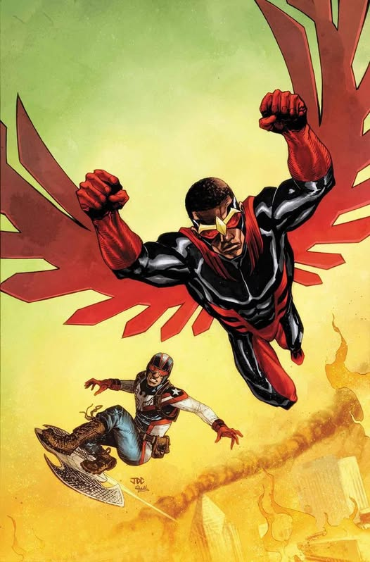

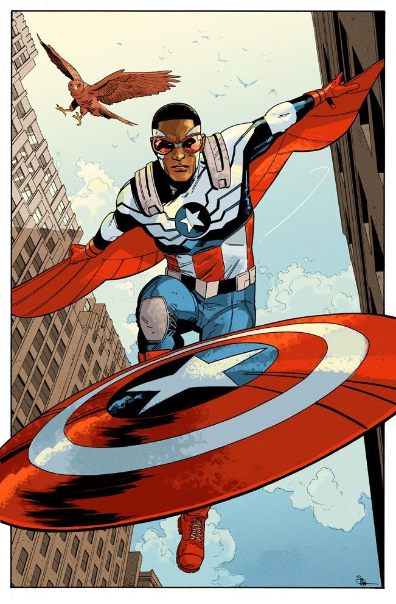
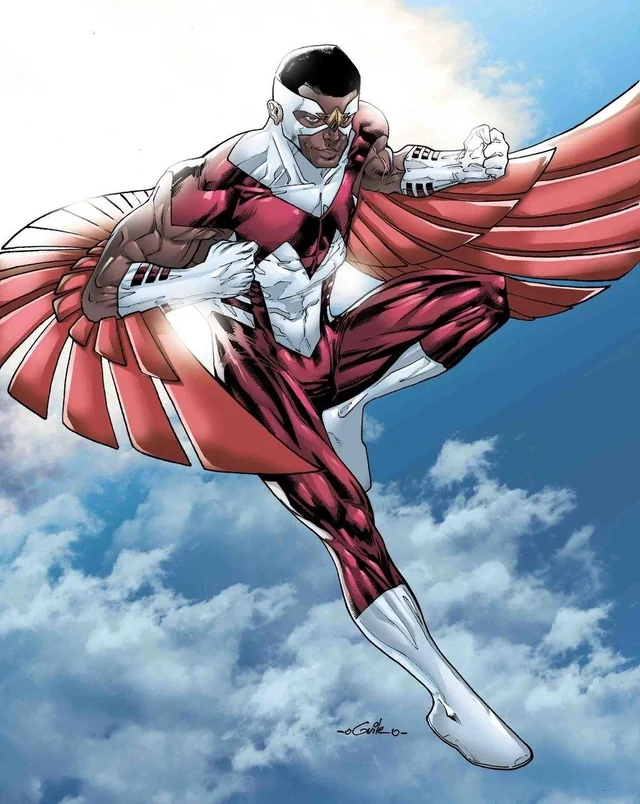
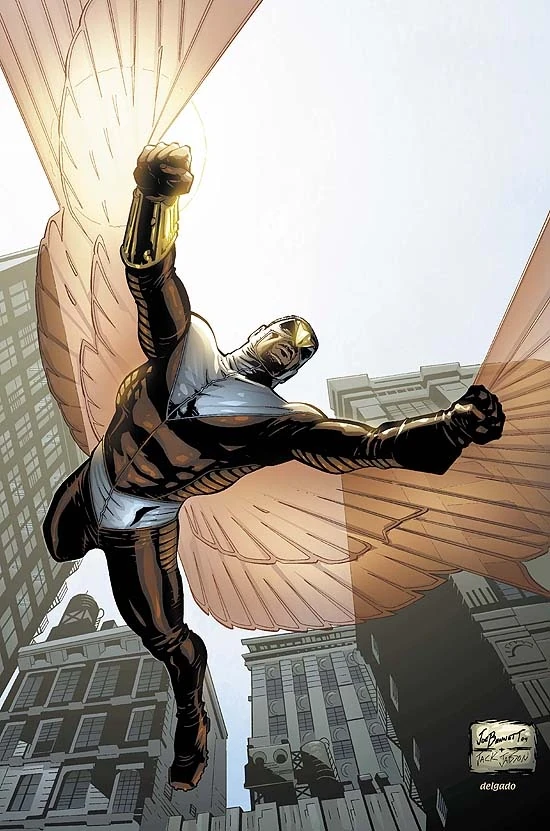
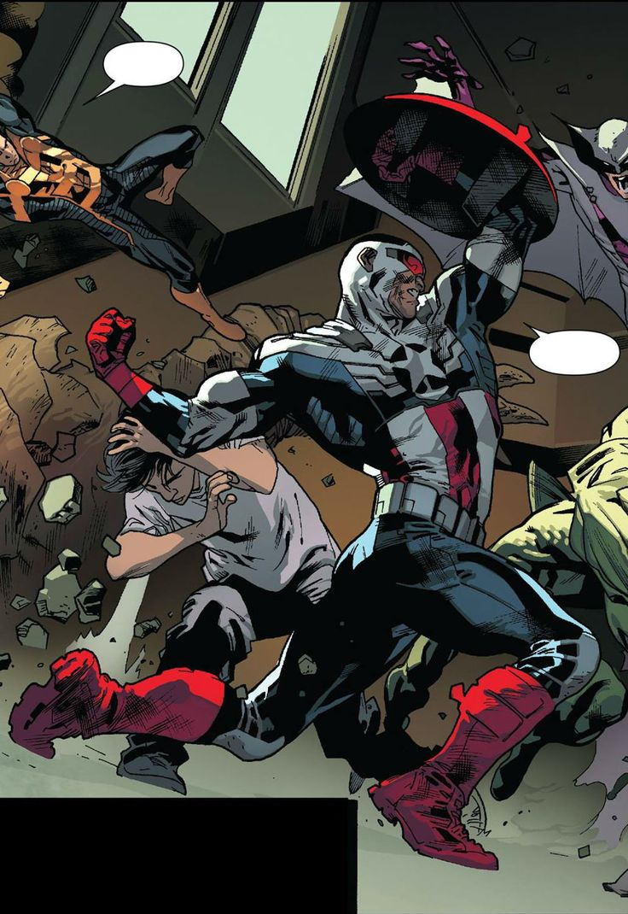
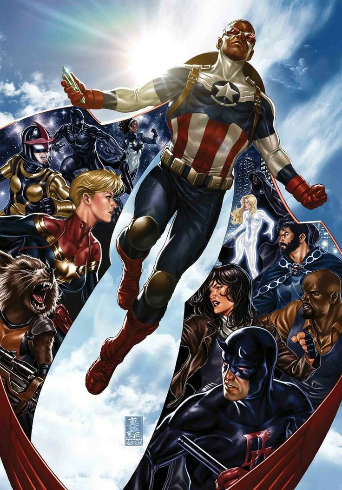
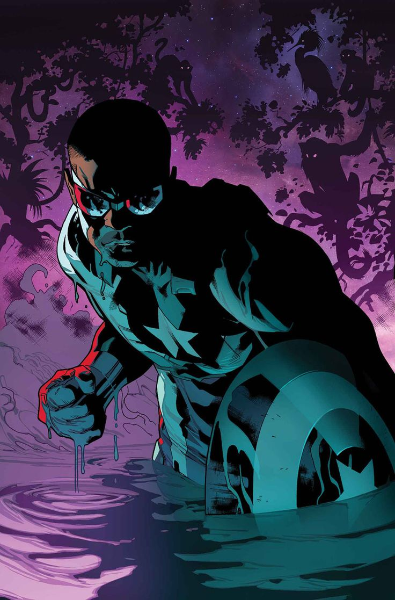
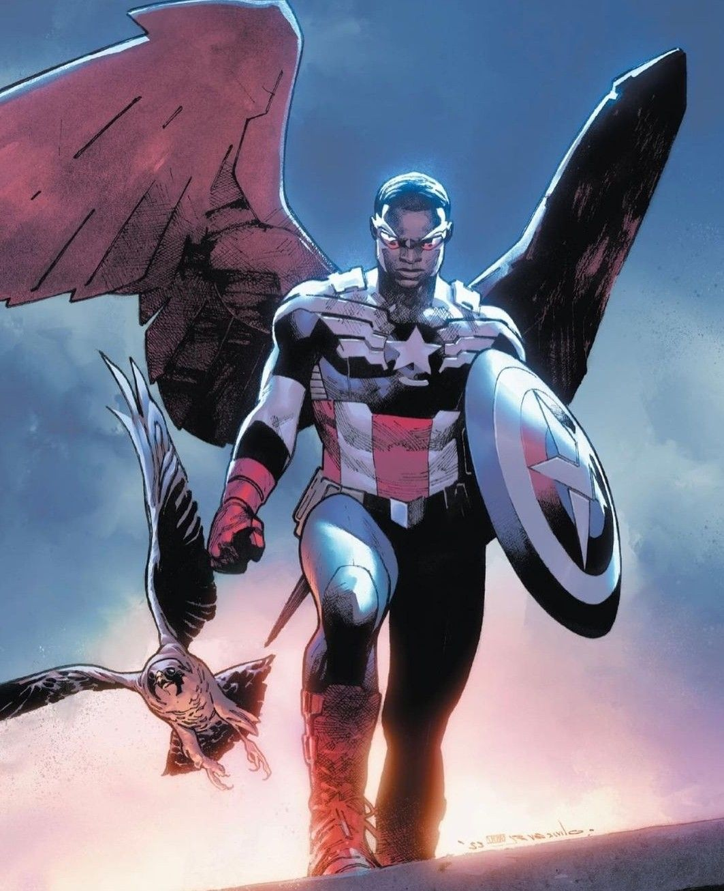
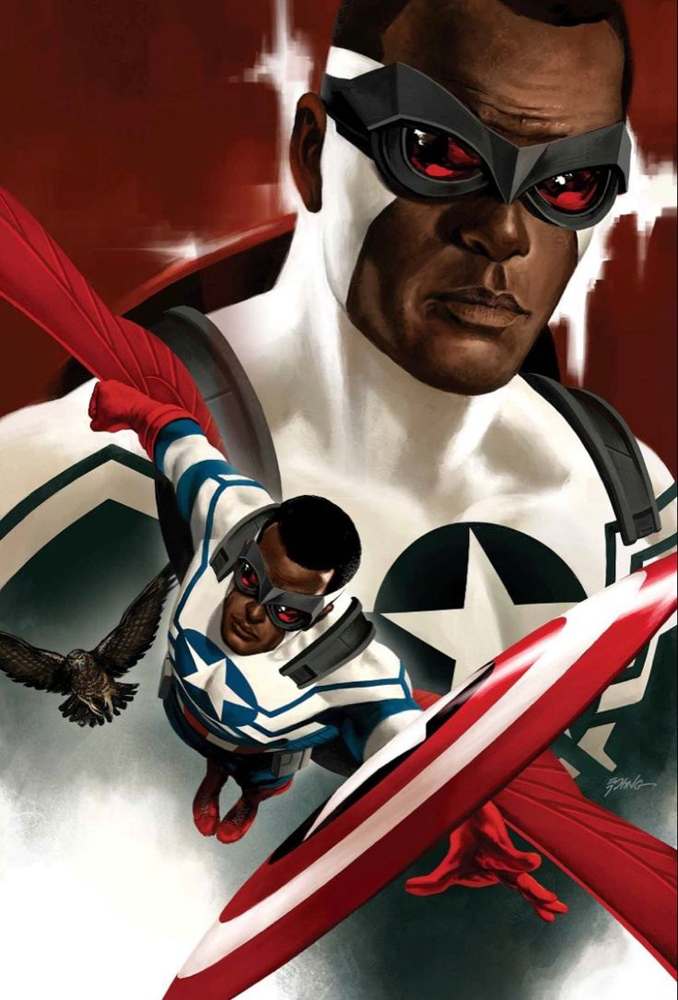
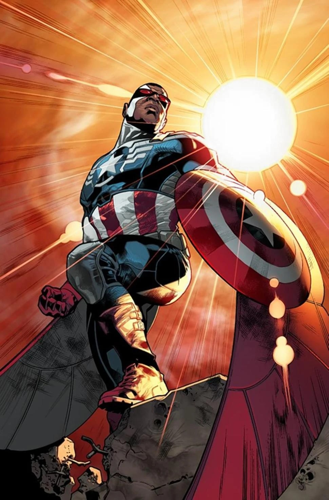
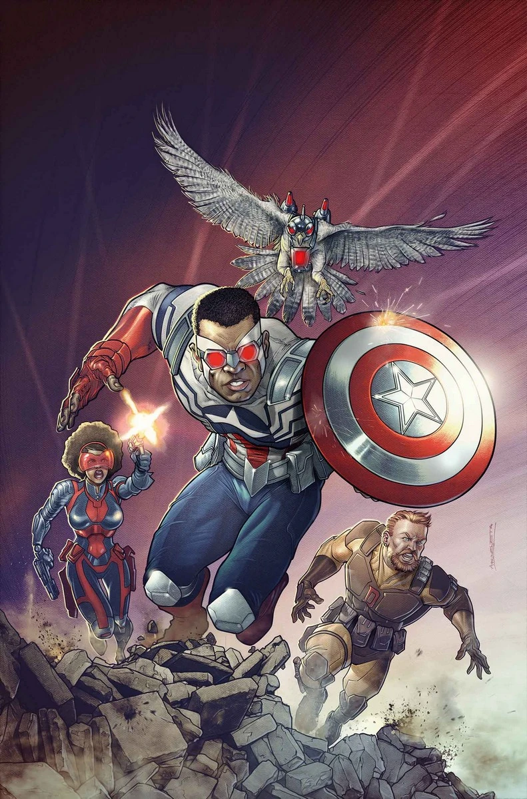
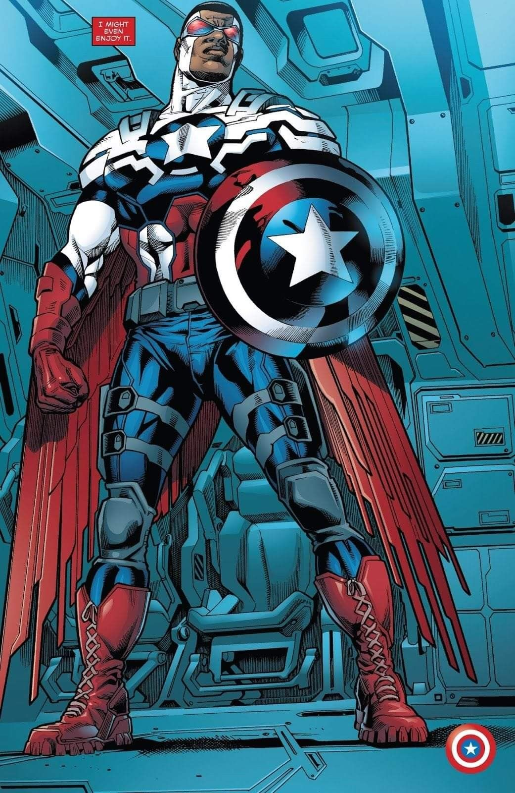
Personnalité :
Samuel Wilson est un personnage très altruiste et compatissant.
Il est engagé dans la défense des opprimés, et se soucie sincèrement des gens, en particulier des communautés marginalisées.
Bien qu'il ne possède pas réellement de super-pouvoirs, il combat avec bravoure et courage, même lorsque la menace est trop importante pour lui.
Il est extrêmement loyal envers ses amis, en particulier Steve Rogers, qui deviendra son plus proche allié.
Il agira toujours selon ses convictions morales, même si celles-ci impliquent d'aller à l'encontre des ordres ou des figures d'autorité.
C'est également un bon leader, capable de rallier les autres à sa cause facilement.
Il s'est toujours refusé d'être simplement le bras-droit de Captain America, et s'est forgé sa propre identité en tant que Faucon.
Capacités :
Sam Wilson est un artiste martial et un gymnaste talentueux.
Il possède un harnais équipé d'ailes, grâce auquel il peut voler dans les airs.
Il possède un lien mental avec son faucon Redwing, et par extension, sur la plupart des oiseaux.
Il possède la capacité de voir à travers les yeux des oiseaux environnants.

Costume :
Le Faucon porte un justaucorps rouge et blanc, avec un masque sur le visage et des protèges-poignets rouges.
Il porte également un harnais dans le dos, sur lequel sont accrochés une paire d'ailes.
Lors de ses premières apparitions, son costume pourrait faire penser à une tenue de catcheur.
Au fil du temps, son armure a quelque peu changé. Il a gardé ses couleurs, mais le costume s'est «militarisé », avec des parties métalliques.
Il a également troqué son costume ouvert contre une combinaison intégrale, recouvrant ses bras ainsi que son torse et ses mains.
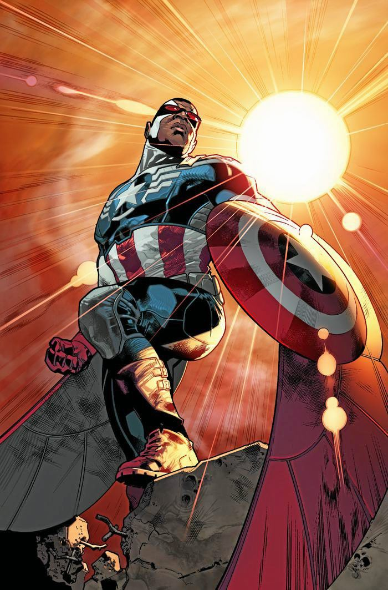
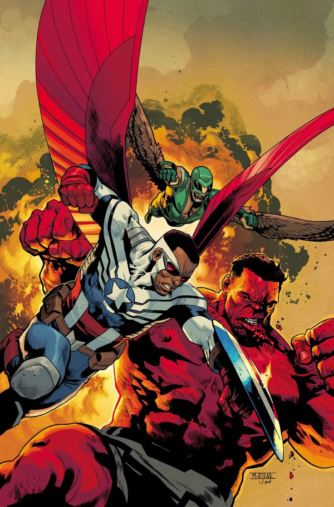
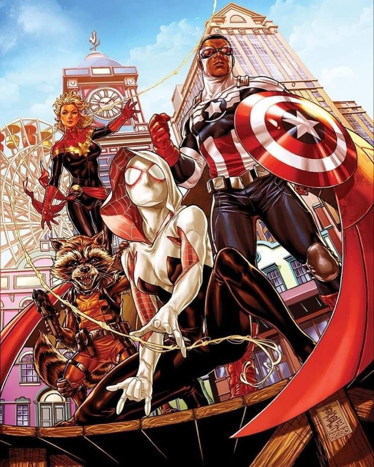
Les principaux ennemis du Faucon


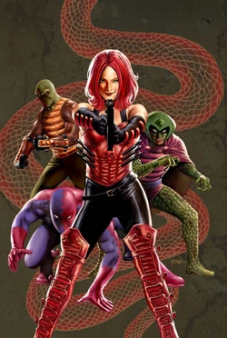
Équipes affiliées